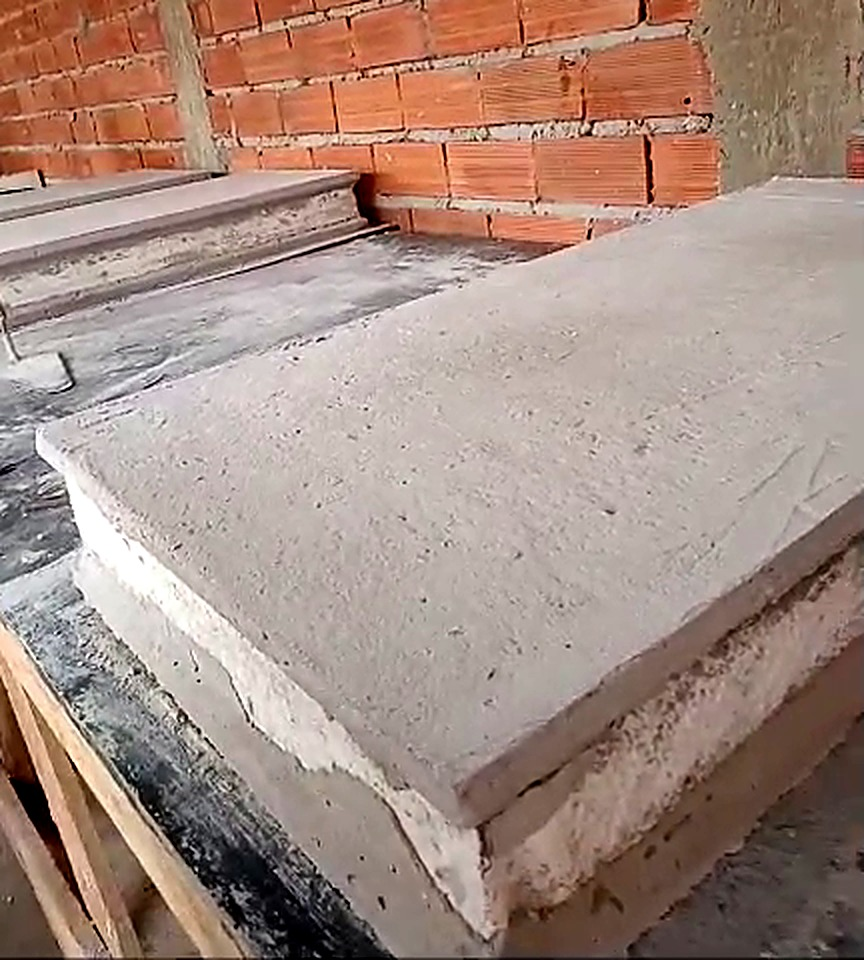
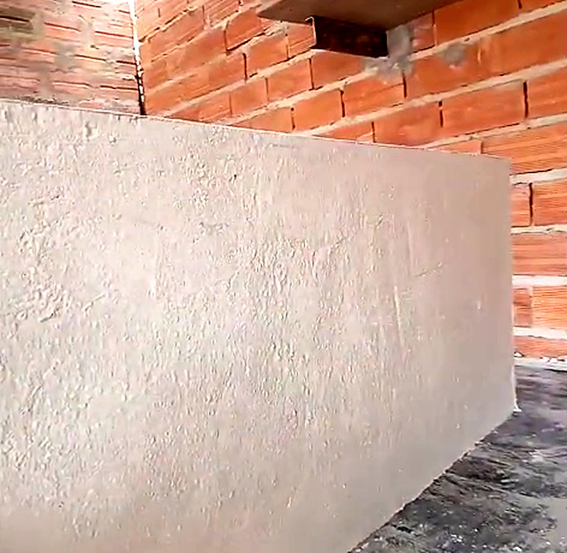

Direto da fábrica
Fabricado em
Itapetininga.


Térmico
Acústico
Obra mais rápida
Sem reboco
Espessuras
10 · 13 · 15 · 20 cm
Faça seu
orçamento
Itapetininga-SP e região
WhatsApp (15) 99121-2917
 Direto da fábricaDireto da fábrica
Direto da fábricaDireto da fábrica